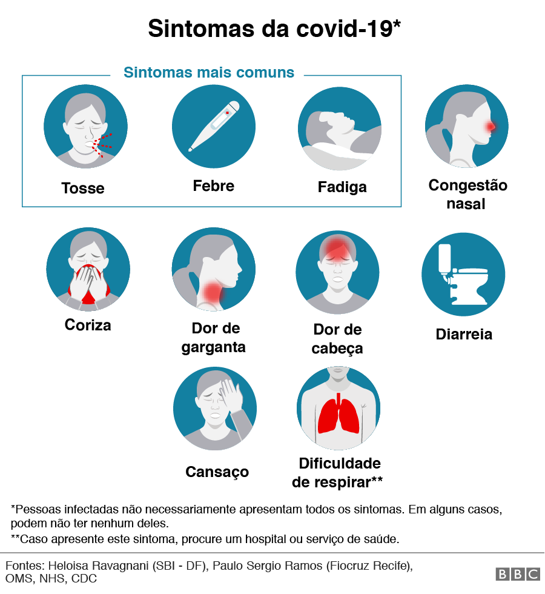

Sobe para 165 o nº de casos confirmados de Covid-19 no Pará
O estado do Pará possui mais 11 novos casos da Covid-19,
doença causada pelo novo coronavírus (Sars-CoV-2).
A Secretaria de Estado de Saúde Pública (Sespa) divulgou o boletim informativo
nesta quarta-feira (8). Agora o Pará registra 165 pacientes
confirmados com Sars-CoV-2 e seis óbitos.
Coronavirus: por dentro de uma UTI lutando contra a covid-19
Fique por dentro do que está acontecendo dentro de uma UTI lutando contra a covid-19
Número atualizado de casos do novo coronavírus
Fique por dentro do que está acontecendo dentro de uma UTI lutando contra a covid-19
Bolsonaro anuncia pesquisa de eficácia da cloroquina para coronavírus
Informações a respeito da eficácia do uso da cloroquina no combate ao coronavírus

Sintomas da covid-19
Com a disseminação do novo coronavírus no Brasil se intensificando às vésperas do outono,
aumentaram as dúvidas sobre os sintomas da doença covid-19, que, na maioria dos casos, são
semelhantes aos de uma gripe comum.
Estudo genético mostra por que vírus da covid-19 não foi “feito em laboratório”
Mutações do genoma do vírus que o tornam mais infeccioso em humanos
surgem aleatoriamente durante sua replicação e, por serem imperfeitas, é pouco
provável a hipótese de terem sido produzidas pelo homem.